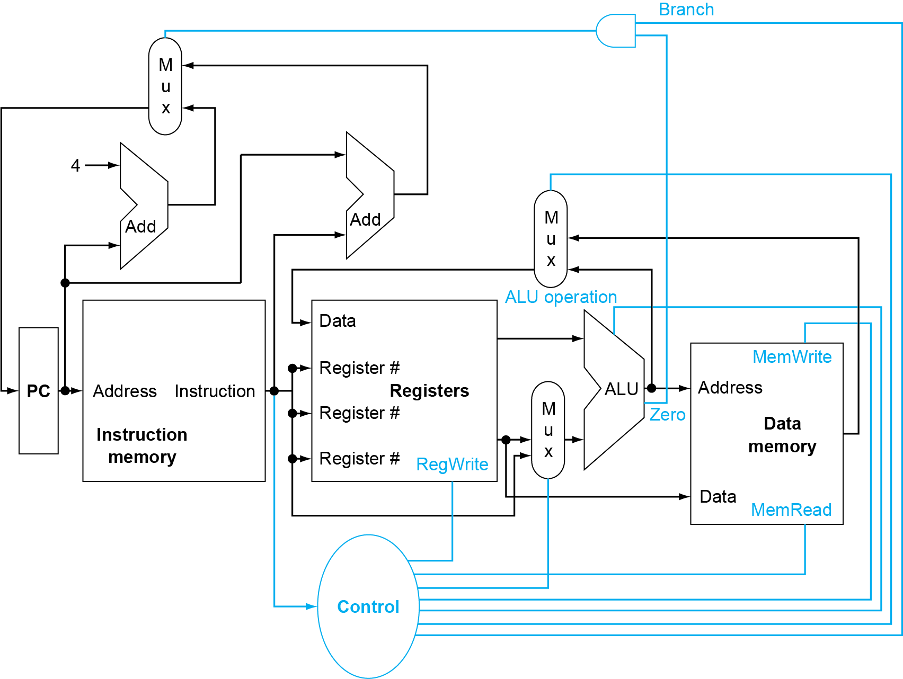
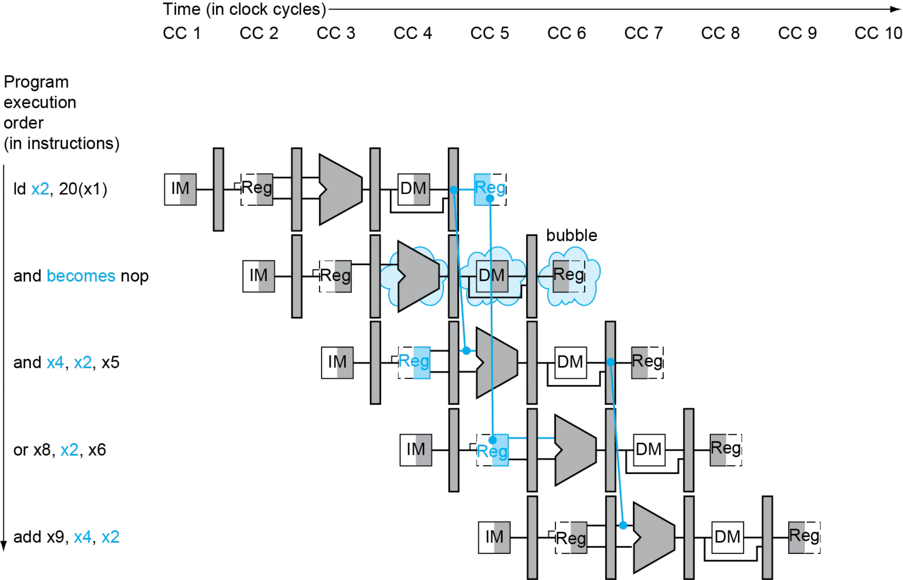
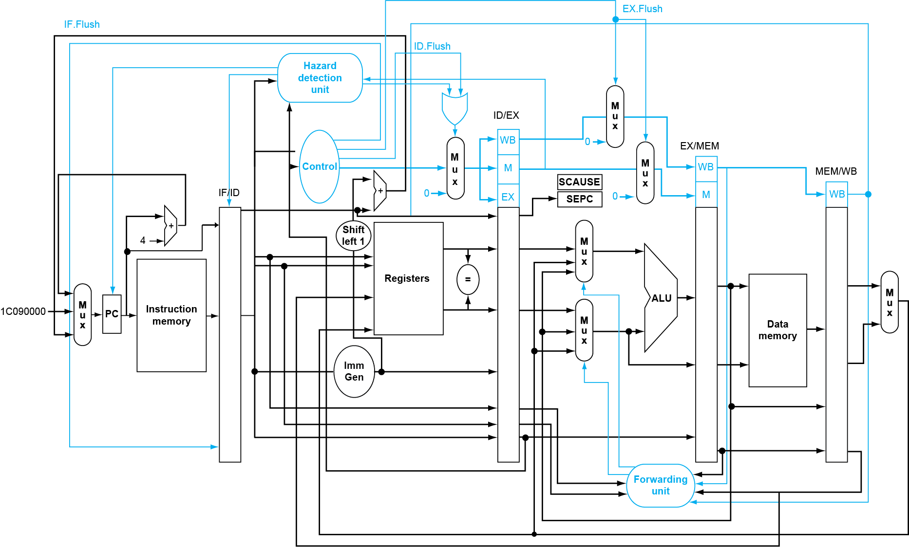
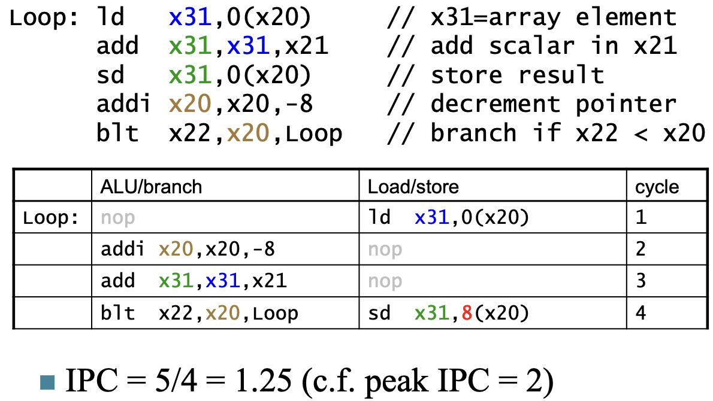

Chap4.The Processor¶
4.1 Introduction¶
Info
- Send PC to the code memory.
- Read one or two register.

图中出现的 multiplexor：
- 左上角：PC 的来源有两个：PC + 4（靠左的 Add）或者是由指令指定的地址（靠右的 Add）
- 中间：写回寄存器的数据也有两个来源：ALU 的运算结果，或来自内存的值
- 下面的 ALU：第二个输入也有两个来源：寄存器或立即数
4.2 Logic Design¶
-
Information encoded in binary
- Low voltage = 0, High voltage = 1
-
One wire per bit
-
Multi-bit data encoded on multi-wire buses
-
Combinational element
-
Operate on data
-
Output is a function of input
-
-
State (sequential) elements
- Store information
4.3 Building a Datapath¶
Datapath：Elements that process data and addresses
同类指令的 opcode 是一样的（I 型指令的里逻辑运算、load 指令、jal 不同），具体功能由 Func 决定（因此不把所有操作编到 opcode 内）
1. Instruction execution in RISC-V¶
-
Fetch
-
从指令存储器（instruction memory）中取出当前要执行的指令
-
将程序计数器（PC）更新为下一条指令的地址，通常是当前PC + 4
-
-
Instruction decoding & Read Operand
-
指令被译码成控制信号，用于指导后续各个功能单元的操作
-
读取指令所需的寄存器操作数，判断是否需要使用 these 寄存器的内容
-
-
Executive Control
- 控制算术逻辑单元（ALU）执行相应的运算
-
Memory access（内存访问）
-
对于需要访问内存的指令（如加载/存储），在此阶段进行内存读写。
-
只有加载（load）和存储（store）指令才会进入这个阶段。其他指令（如R型、I型）不需要访问内存。
-
-
Write results to register（结果写回寄存器）
-
如果是R型指令（如 add, sub），将ALU计算的结果写入目标寄存器
rd -
如果是I型指令且为加载指令（如 lw），则从内存读取的数据写入
rd寄存器
-
-
Modify PC for branch instructions
- 针对分支指令（如 beq, bne），根据条件判断是否跳转，然后更新PC指向新的目标地址
2. Instruction fetching¶

-
R-format Instructions
-
Read 2 register operands
-
Perform arithmetic/logical operation
-
Write register result
-
-
Load/Store Instructions
-
Read register operands
-
Calculate address using 12-bit offset
- Use ALU, but sign-extend offset
-
Load: Read memory and update register
-
Store: Write register value to memory
-
-
Branch Instructions
-
Read 2 register operands
-
Compare operands
- use ALU, substract and check Zero output
-
Calculate target address
-
Sign-extend displacement
-
Shift left 1 place (halfword displacement)
-
Add to PC value
-
-
Composing the Elements 组合元件
First-cut data path does an instruction in one clock cycle
-
Each datapath element can only do one function at a time
-
Hence, we need separate instruction and data memories
Use multiplexers where alternate data sources are used for different instructions
3. Path Built using Multiplexer¶
- R-type instruction Datapath
-
I-type instruction Datapath
-
For ALU
-
For load
-

- S type Instruction & Data stream

- SB type Instruction & Data stream

- Jal/J type Instruction & Data stream

- R-Type/Load/Store Datapath

- Full Datapath

4.4 A simple Implementation Scheme¶
Analyze for cause and effect
-
Information comes from the 32 bits of the instruction
-
Selecting the operations to perform (ALU, read/write, etc.)
-
Controlling the flow of data (multiplexor inputs)
-
ALU's operation based on instruction type and function code

Building Controller

- 7 个控制信号和一个 4 位的
ALU_operation
1. ALU symbol & Control¶
ALU used for
-
Load/Store: F = add
-
Branch: F = subtract
-
R-type: F depends on opcode
Scheme of Controller 控制器的方案
- 因此进行两级解码 2-level decode.

First level¶
-
一级解码后，可以决定除了
ALU_opration以外的控制信号 -
同时我们会解码出 2 位的
ALU_op.
Second level¶
- ALU operation is decided by 2-bit ALU-Op derived from opcode, and funct7 & funct3 fields of the instruction
2. Datapath with Control¶

4.5 An overview of pipelining¶
1. Performance¶
| Instruction | Instr fetch | Register read | ALU op | Memory access | Register write | Total time |
|---|---|---|---|---|---|---|
| ld | 200ps | 100 ps | 200ps | 200ps | 100 ps | 800ps |
| sd | 200ps | 100 ps | 200ps | 200ps | 700ps | |
| R-format | 200ps | 100 ps | 200ps | 100 ps | 600ps | |
| beq | 200ps | 100 ps | 200ps | 500ps |
Longest delay determines clock period（针对单周期 CPU）
-
Critical path: load instruction
-
Instruction memory -> register file -> ALU -> data memory -> register file
2. Pipeline¶
每条指令被划分为以下几步：
- IF: Instruction fetch from memory
- ID: Instruction decode & register read
- EX: Execute operation or calculate address
- MEM: Access memory operand
- WB: Write result back to register
利用流水线，可以有效地提高执行的效率

-
CPI is decreased to 1, since one instruction will be issued (or finished) each cycle.
-
During any cycle, one instruction is present in each stage.
-
Ideally, performance is increased five fold
Pipeline performance¶

-
流水线 CPU 的时钟周期为最长的操作时间
-
流水线可以提高吞吐率（throughput）但没有改变每条指令的执行时间 (Latency)
-
如果各阶段均匀分布，那么可以得到：
3. Hazards¶
此处讨论那些阻碍在下一个时针周期开始下一条指令的情况
Structure Hazards¶
-
硬件资源不足或共享导致多个指令在同一周期内竞争使用同一资源，从而引发的冲突
-
为解决 IF 和 MEM 阶段的冲突，使用独立的指令存储与数据存储
Data Hazards¶
- An instruction depends on completion of data access by a previous instruction
Example

- EX 在前半周期写入寄存器
- ID 在后半周期从寄存器中取值
Forwarding (aka Bypassing)
Use result when it is computed
-
Don't wait for it to be stored in a register
-
Requires extra connections in the datapath
Load-Use Data Hazard¶
- Can't always avoid stalls by forwarding
- 此处 sub 指令的 EX 必须等待 ld 指令的 MEM 输出对应的数据，才能继续执行
Example
- 可以通过乱序执行来加快执行

Control Hazards¶
-
Branch determines flow of control
-
Fetching next instruction depends on branch outcome
-
Pipeline can't always fetch correct instruction
- Still working on ID stage of branch
-
Stall on Branch¶
- 在 fetch 下一条指令前等待，直到 branch 的结果已经确定
Example

- 将比较放在 ID 级
Branch Prediction¶
- Longer pipelines can't readily determine branch outcome early
Static branch prediction
- Based on typical branch（假设总是命中/不命中）
Dynamic branch prediction
-
Hardware measures actual branch behavior
-
Assume future behavior will continue the trend（按之前的结果预测）
4.6 RISC-V Pipelined Datapath¶
竞争只会发生在从右往左的阶段
1. Pipeline registers¶
Need registers between stages
-
To hold information produced in previous cycle
-
不同运算单元里在执行不同的指令，防止前后两条指令之间发生冲突

2. Pipeline Operation¶
Cycle-by-cycle flow of instructions through the pipelined datapath
-
“Single-clock-cycle” pipeline diagram
-
Shows pipeline usage in a single cycle
-
Highlight resources used
-
-
“multi-clock-cycle” diagram
- Graph of operation over time
Multi-Cycle Pipeline Diagram¶
- 展示资源占用的格式

- 传统格式
Single-Cycle Pipeline Diagram¶
- 只显示一个周期内发生的事件

Pipelined Control
4.7 Data Hazards¶
考虑以下代码：
sub x2, x1, x3
and x12, x2, x5
or x13, x6, x2
add x14, x2, x2
sd x15, 100(x2)
We can resolve hazards with forwarding
- How do we detect when to forward?
1. Forwarding¶

-
左边两根蓝线的方向是错误的，
and和or得到的是之前的x2（其值为 10） -
右边的
add和sd指令得到的x2是更新过的（其值为 -20）
2. Detecting¶
-
给流水线寄存器编号
▪ Eg.ID/EX.RegisterRs1表示位于 ID/EX 流水线寄存器中的 Rs1 所对应的寄存器 -
在 EX 阶段，ALU 操作数的寄存器编号由以下给出
▪ID/EX.RegisterRs1、ID/EX.RegisterRs2
Detecting the need to forward¶
Info
当出现以下情况时，存在数据冒险（Data Hazards）
- 1a.
EX/MEM.RegisterRd = ID/EX.RegisterRs1 -
1b.
EX/MEM.RegisterRd = ID/EX.RegisterRs2- 前一条指令（在 EX/MEM 阶段）即将写入的寄存器（RegisterRd），正好是当前指令（在 EX 阶段）第一/二个源操作数（Rs1/Rs2）所要读的寄存器。
- Eg:
add x5, x1, x2，sub x6, x5, x3→ 可从前一个指令的 EX/MEM 流水线寄存器 进行前推（Forward）
-
2a.
MEM/WB.RegisterRd = ID/EX.RegisterRs1 -
2b.
MEM/WB.RegisterRd = ID/EX.RegisterRs2-
前一条指令（在 MEM/WB 阶段）即将写入的寄存器，等于当前指令的 Rs1/Rs2
-
Eg:
lw x9, 0(x10)，add x11, x9, x12→ 可从前一个指令的 MEM/WB 流水线寄存器 进行前推（Forward）
-
Info
当前面的指令会写入寄存器时才需要前向传递
-
EX/MEM.RegWrite：表示在 EX 到 MEM 期间，该指令是否会写寄存器 -
MEM/WB.RegWrite：表示在 MEM 到 WB 期间，该指令是否会写寄存器 -
两个信号中至少一个为真时，才有可能存在可前向传递的数据
当该指令的目标寄存器不是 x0 时才需要前向传递
-
EX/MEM.RegisterRd ≠ 0：表示 EX/MEM 阶段的指令目标寄存器不是x0 -
MEM/WB.RegisterRd ≠ 0：表示 MEM/WB 阶段的指令目标寄存器也不是x0 -
这两个条件确保我们只考虑 those 真正写入非零寄存器的操作
Forwarding Path¶

| Mux control | Source | Explanation |
|---|---|---|
| ForwardA = 00 | ID/EX | The first ALU operand comes from the register file. |
| ForwardA = 10 | EX/MEM | The first ALU operand is forwarded from the prior ALU result. |
| ForwardA = 01 | MEM/WB | The first ALU operand is forwarded from data memory or an earlier ALU result. |
| ForwardB = 00 | ID/EX | The second ALU operand comes from the register file. |
| ForwardB = 10 | EX/MEM | The second ALU operand is forwarded from the prior ALU result. |
| ForwardB = 01 | MEM/WB | The second ALU operand is forwarded from data memory or an earlier ALU result. |
Bug

-
Only fwd if EX hazard condition isn't true
-
只有当 EX 阶段没有发生冒险时，才考虑从 MEM 阶段前向传递
Revised Forwarding Condition¶
- 精确判断是否需要从 MEM/WB 阶段进行数据前向传递，避免在存在 EX 阶段冒险 时错误地使用 MEM 阶段的数据，从而防止数据冲突或错误。
MEM hazard
if (MEM/WB.RegWrite
and (MEM/WB.RegisterRd ≠ 0)
and not (EX/MEM.RegWrite and (EX/MEM.RegisterRd ≠ 0)
and (EX/MEM.RegisterRd = ID/EX.RegisterRs1))
and (MEM/WB.RegisterRd = ID/EX.RegisterRs1))
then ForwardA = 01
if (MEM/WB.RegWrite
and (MEM/WB.RegisterRd ≠ 0)
and not(EX/MEM.RegWrite and (EX/MEM.RegisterRd ≠ 0)
and (EX/MEM.RegisterRd = ID/EX.RegisterRs2))
and (MEM/WB.RegisterRd = ID/EX.RegisterRs2))
then ForwardB = 01
Datapath with Forwarding
3. Load-Use Hazard Detection¶
如果在 ld 指令 EX/MEM 时暂停，此时 ld 后面有两条指令需要暂停，其实可以更早地发现这个问题
- 在 ID 阶段， ALU 的操作数来自于
IF/ID.RegisterRs1，IF/ID.RegisterRs2Load-use hazard when:If detected, stall and insert bubbleID/EX.MemRead and ((ID/EX.RegisterRd = IF/ID.RegisterRs1) or (ID/EX.RegisterRd = IF/ID.RegisterRs2))
Stall¶
-
使得 ID/EX register 的控制信号为 0
- EX, MEM 和 WB 不进行操作（保持原来的状态）
-
同时阻止 PC, IF/ID 寄存器的更新
-
这相当于重复进行了一次 decode（下一条将被执行的指令被 fetch 了两次 ）
-
1-cycle 的 stall 让 MEM 有时间去为 ld 指令读取数据
-
Info
-
如图，一次 stall 后，Reg 中的数据可以拿来给
or x8, x2, x6中的 x2 使用 -
在 Reg 处插入一个 bubble
 -
Datapath with Hazard Detection

4.8 Branch Hazards¶
是否跳转在 ALU 完成计算之后的 MEM 阶段 决定
- 如下图，如果发生转跳，需要清除之前的三条指令（此时恰好没有更新 DM 和 Reg，直接清除即可）

Tip
把原本在 EX 完成的分支判断提前到 ID 完成
-
在 ID 阶段已经读出两个寄存器的地址和一个立即数
-
可通过Target address adder（目标地址加法器） 或 Register comparator（寄存器比较器） 得出结果
Example
在 ID 处完成结果的计算

1. Dynamic Branch Prediction¶
Branch prediction buffer (aka branch history table)
-
硬件存储结构，通常是一个小的 SRAM 表，用于记录每个分支指令在过去的行为
-
每个表项对应一个分支指令地址。
-
存储的是该分支最近几次是否被 taken 或 not taken
-
Indexed by recent branch instruction addresses (lower part)
-
为了节省空间，通常只用分支指令地址的 低几位 来作为表的索引 Stores outcome (taken/not taken)
-
每个表项保存一个状态，比如：
-
1-bit：表示上一次是 taken 还是 not taken
-
2-bit：更复杂的状态机（如 “strongly taken”, “weakly taken” 等）
-
Info
-
Check table, expect the same outcome
-
Start fetching from fall-through or target
-
If wrong, flush pipeline and flip prediction
1-Bit Predictor¶
【缺点】对于双层循环，当内层循环要结束时会错两次（每次错误都会修改原有预测）
-
Mispredict as taken on last iteration of inner loop
-
Then mispredict as not taken on first iteration of inner loop next time around

2-Bit Predictor¶
- 针对 1-bit 做出了改进：只有连续错误两次才会我们的预测
2. Calculating the Branch Target¶
Even with predictor, still need to calculate the target address
-
分支预测器只能预测“是否跳转”，但不能直接提供目标地址
-
1-cycle penalty for a taken branch
Branch target buffer
-
Cache of target addresses
-
Indexed by PC when instruction fetched
-
If hit and instruction is branch predicted taken, can fetch target immediately
-
减少分支延迟，提升流水线效率，对频繁执行的循环或条件跳转非常有效
-
4.9 Exceptions and Interrupts¶
“Unexpected” events requiring change in flow of control
-
Exception 异常
-
Arises within the CPU
-
e.g., undefined opcode, syscall, hardware malfunction …
-
-
Interrupt 中断
- From an external I/O controller
1. Handling Exceptions¶
-
Save PC of offending (or interrupted) instruction 存储异常指令的 PC 值
- In RISC-V: Supervisor Exception Program Counter (SEPC)
-
Save indication of the problem
-
In RISC-V: Supervisor Exception Cause Register (SCAUSE)
-
64 bits, but most bits unused
-
Exception code field（标识具体的异常类型）: 2 for undefined opcode, 12 for hardware malfunction, …
-
-
Jump to handler
-
完成上述两步处理后，CPU 会跳转到一个预定义的内存地址，开始执行异常处理代码
-
Assume at
0000 0000 1C09 0000hex
-
An Alternate Mechanism¶
Info
传统方式中，所有异常都跳转到同一个固定地址，然后由软件判断类型并分发处理。而这里介绍的是基于原因直接跳转到对应处理程序的方式。
- Instructions either Deal with the interrupt, or Jump to real handler
Vectored Interrupts
-
Handler address determined by the cause
-
根据异常或中断的原因（cause），直接确定处理程序的地址
Exception vector address to be added to a vector table base register:
-
系统有一个向量表（vector table），存放各种异常类型的处理程序入口地址
-
每个异常类型对应一个偏移量（offset），处理器会把该偏移量 加上一个基地址寄存器（vector table base register），得到最终的处理程序地址
-
Undefined opcode：00 0100 0000two
-
Hardware malfunction：01 1000 0000two
-
…
2. Handling Actions¶
-
-
Read cause, and transfer to relevant handler
-
Determine action required
-
If restartable
-
Take corrective action
-
use SEPC to return to program
-
-
Otherwise
-
Terminate program
-
Report error using SEPC, SCAUSE, …
-
3. Exceptions in a Pipeline¶
Another form of control hazard
Consider malfunction（硬件故障）on add in EX stage add x1, x2, x1
处理步骤如下：
1. Prevent x1 from being clobbered
2. Complete previous instructions
3. Flush add and subsequent instructions
4. Set SEPC and SCAUSE register values
- 由于异常发生，后续已经取指或译码的指令都是无效的
-
Transfer control to handler
- 处理器跳转到预设的异常处理程序入口地址开始执行处理逻辑
Tip
Similar to mispredicted branch
- Use much of the same hardware

Info
Restartable exceptions
-
Pipeline can flush the instruction
-
Handler executes, then returns to the instruction
- Refetched and executed from scratch
PC saved in SEPC register
- Identifies causing instruction
4. Multiple Exceptions¶
Pipelining overlaps multiple instructions
- 流水线重叠了多条指令可能同时触发异常
Simple approach: deal with exception from earliest instruction
-
只处理最早进入流水线的那条异常指令（即最早触发异常的指令）
-
忽略后续指令产生的异常，并清空后续所有指令
这样操作可以实现“精确异常（precise exceptions）”
-
所有在异常指令之前的指令都已完成；
-
所有在异常指令之后的指令都被清除；
-
程序状态与异常发生前一致，保证了语义正确性。
5. Imprecise Exceptions¶
当异常发生时，系统不能准确地确定是哪条指令引发了异常，也不能保证所有之前的指令都已正确完成
-
Just stop pipeline and save state
- 当检测到异常时，处理器立即暂停流水线运行，同时保存当前状态
-
Let the handler work out
- 让异常处理程序自行判断
-
Simplifies hardware, but more complex handler software
-
Not feasible for complex multiple-issue out-of-order pipelines
- 对于复杂的多发射乱序流水线来说不可行
4.10 Instruction-Level Parallelism (ILP)¶
Pipelining: executing multiple instructions in parallel
To increase ILP - Deeper pipeline
- 每个阶段的工作量减少 → 单个阶段延迟降低 → 使 clock cycle 减小
-
Multiple issue
-
Replicate pipeline stages \(\Rightarrow\) multiple pipelines
-
Start multiple instructions per clock cycle
-
CPI < 1, so use Instructions Per Cycle (IPC)
-
E.g., 4GHz 4-way multiple-issue
-
16 BIPS, peak CPI = 0.25, peak IPC = 4
-
But dependencies reduce this in practice
-
1. Multiple Issue¶
Static multiple issue 静态多发射 编译器在程序运行前就决定哪些指令可以并行执行
-
Compiler groups instructions into "issue packets" 编译器分析代码，找出没有数据和控制依赖的指令，并将它们打包成一组
-
Group of instructions that can be issued on a single cycle
-
Determined by pipeline resources required
-
-
Compiler detects and avoids hazards
Dynamic multiple issue 动态多发射 CPU 在运行时决定哪些指令可以并发执行
-
CPU examines instruction stream and chooses instructions to issue each cycle
-
Compiler can help by reordering instructions
-
CPU resolves hazards using advanced techniques at runtime
Static Multiple Issue¶
Compiler groups instructions into “issue packets”
-
Group of instructions that can be issued on a single cycle
-
Determined by pipeline resources required
Think of an issue packet as a very long instruction
-
Specifies multiple concurrent operations
-
\(\Rightarrow\) Very Long Instruction Word (VLIW)
Compiler must remove some/all hazards
-
Reorder instructions into issue packets
-
No dependencies with a packet
-
Possibly some dependencies between packets
- Varies between ISAs; compiler must know!
-
Pad with nop if necessary
RISC-V with Static Dual Issue¶
Example
Two-issue packets include：
-
One ALU/branch instruction and One load/store instruction
-
64-bit aligned
-
ALU/branch, then load/store
-
Pad an unused instruction with nop (如果某处没有 load/store 指令，则用 nop（空操作）填充，保持结构完整)

-
Pipeline

Hazards in the Dual-Issue RISC-V
-
- Forwarding avoided stalls with single-issue
EX data hazard
-
Now can't use ALU result in load/store in same packet
-
add x10, x0, x1 ld x2, 0(x10) -
Split into two packets, effectively a stall
-
-
Load-use hazard
- Still one cycle use latency, but now two instructions
-
More aggressive scheduling required
!!! example Schedule this for dual-issue RISC-V

Loop Unrolling¶
循环展开 是指将循环体中的代码复制多次，从而减少循环控制的开销，并暴露出更多的并行性，使处理器能够更高效地执行
-
Replicate loop body to expose more parallelism
- Reduces loop-control overhead
-
Use different registers per replication
-
Called “register renaming”
-
Avoid loop-carried “anti-dependencies”
-
反依赖 是一种写后读（Write-after-Read, WAR） 的依赖关系
-
Store followed by a load of the same register
-
Aka “name dependence”
- Reuse of a register name
-
-

Dynamic Multiple Issue¶
“Superscalar” processors（一个时钟周期内执行多条指令的处理器）
-
CPU decides whether to issue 0, 1, 2, … each cycle
- Avoiding structural and data hazards
-
Avoids the need for compiler scheduling
- Though it may still help, but Code semantics（代码语义）is ensured by the CPU
Dynamic Pipeline Scheduling¶
-
Allow the CPU to execute instructions out of order to avoid stalls
-
执行阶段可乱序：只要没有数据依赖，CPU 可以提前执行后面的指令
-
提交阶段必须按序：最终结果写回寄存器时，必须按照原始程序顺序进行（in-order commit），确保程序语义不变
-
Register Renaming¶
-
Reservation stations and reorder buffer effectively provide register renaming
-
On instruction issue to reservation station
-
If operand is available in register file or reorder buffer
-
Copied to reservation station
-
No longer required in the register; can be overwritten
-
-
If operand is not yet available
-
It will be provided to the reservation station by a function unit
-
Register update may not be required
-
Example
add x1, x2, x3
-
若
x2和x3已经在寄存器中，就直接将值拷贝到保留站 -
此时原寄存器
x2,x3不再需要保留这些值，可以用于后续指令ld x1, 0(x2) # 加载数据到 x1 add x3, x1, x4 # 等待 x1 的值 -
add发射时，x1尚未就绪；保留站标记x1为“待定”； -
当
ld完成后，结果会直接传给add的保留站； -
不需要先写回寄存器
x1，然后让add再读取 —— 这就是数据前推（forwarding） 和寄存器重命名结合的效果。
Speculation¶
-
Predict branch and continue issuing
- Don't commit until branch outcome determined
-
Load speculation
-
Avoid load and cache miss delay 内存访问可能需要几十甚至上百个时钟周期，CPU 在等待期间会空闲。因此，可以尝试“提前加载”数据。
-
Predict the effective address
-
Predict loaded value
-
Load before completing outstanding stores
-
Bypass stored values to load unit
-
Don't commit load until speculation cleared
-
Why Do Dynamic Scheduling?¶
选择动态调度而不是让编辑器调度的原因：
-
Not all stalls are predicable n
- e.g., cache misses
-
Can't always schedule around branches
- Branch outcome is dynamically determined
-
Different implementations of an ISA have different latencies and hazards
2. Speculation¶
“Guess” what to do with an instruction
-
Start operation as soon as possible
-
Check whether guess was right
-
If so, complete the operation
-
If not, roll-back and do the right thing Common to static and dynamic multiple issue
-
Example
-
Speculate on branch outcome
- Roll back if path taken is different
-
Speculate on load
- Roll back if location is updated
Compiler/Hardware Speculation¶
Compiler can reorder instructions 静态推测的一种形式，由编译器在程序运行前进行优化
-
e.g., move load before branch
-
Can include “fix-up” instructions to recover from incorrect guess
Hardware can look ahead for instructions to execute 动态推测的一种形式，CPU 在运行时自主决策
-
Buffer results until it determines they are actually needed
- 当处理器推测执行某条指令时，将结果暂存到缓冲区中
-
Flush buffers on incorrect speculation
Speculation and Exceptions¶
当一条被推测执行的指令触发了异常时，系统该如何处理？
-
e.g., speculative load before null-pointer check
if (ptr != NULL) { x = *ptr; // 此处可能被推测执行 } -
处理器可能在
ptr != NULL判断完成前，就提前执行*ptr操作 -
如果
ptr为NULL，那么这个加载就会导致 段错误 或 非法内存访问异常
Static speculation
-
Can add ISA support for deferring exceptions
-
允许某些指令在推测执行时产生异常，但不立即中断程序，而是将异常“挂起”（deferred），等到确定该指令确实需要执行时再决定是否抛出
Dynamic speculation
- Can buffer exceptions until instruction completion (which may not occur)
4.14 Fallacies¶
Bug
-
流水线很简单- 大致思路很简单（洗衣服的那个类比），但细节上的理解就困难了（比如处理各类冒险问题等）
-
流水线思想的实现与工艺无关
-
实际上，更多的晶体管将会带来更高级的工艺
-
流水线相关的 ISA 设计需要考虑工艺的发展趋势
-
Bug
-
不良的 ISA 设计将会对流水线运行产生不利影响
-
复杂的指令集、复杂的寻址模式、延迟分支都会影响流水线的运行效率